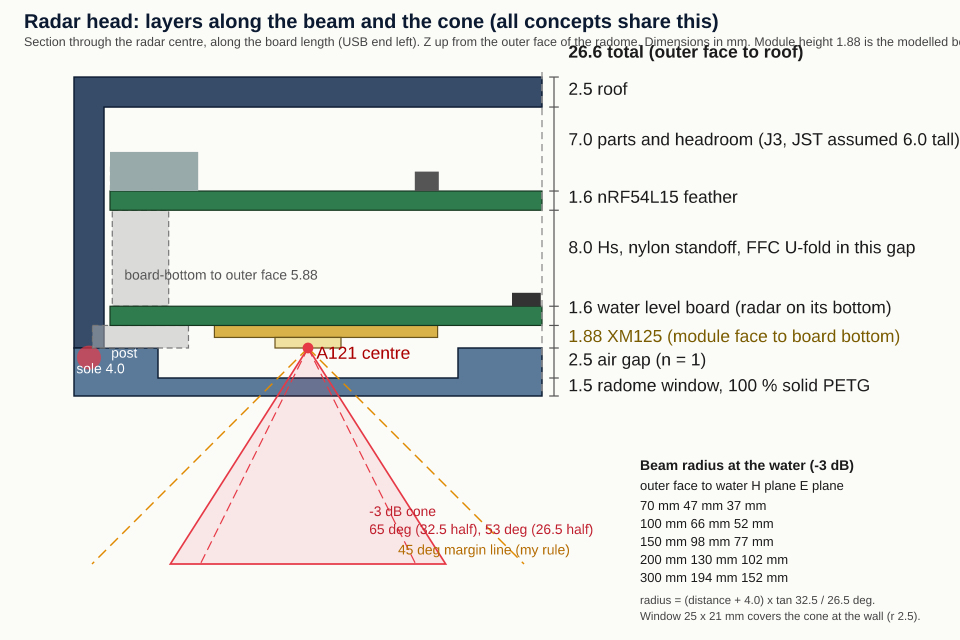
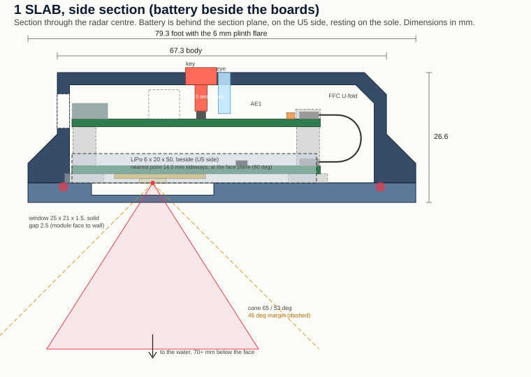
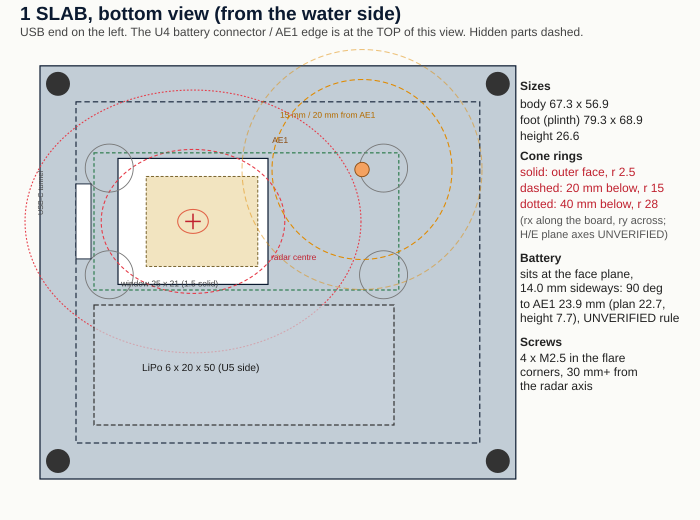
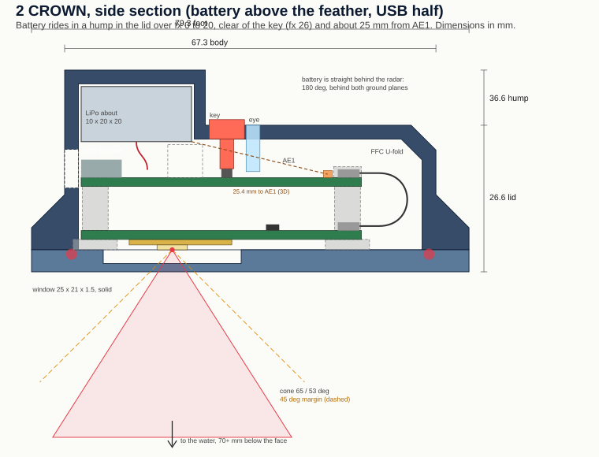
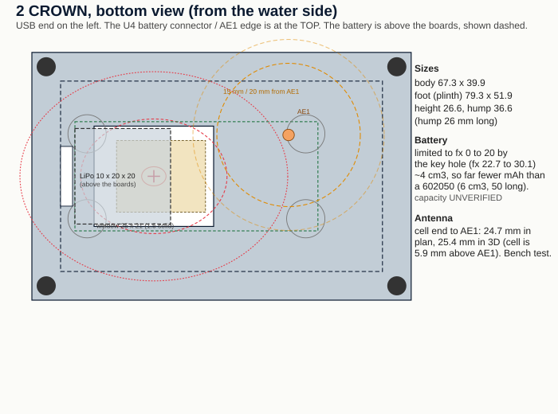
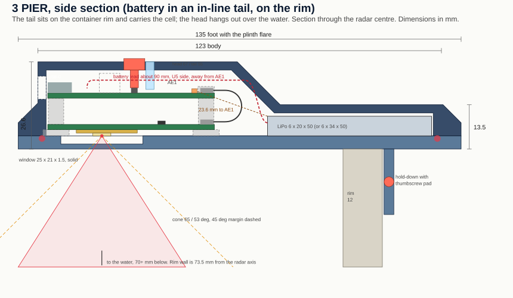
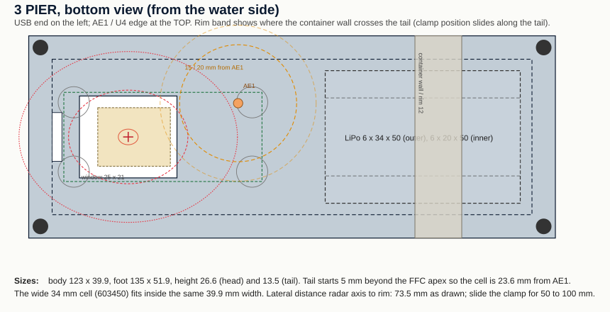
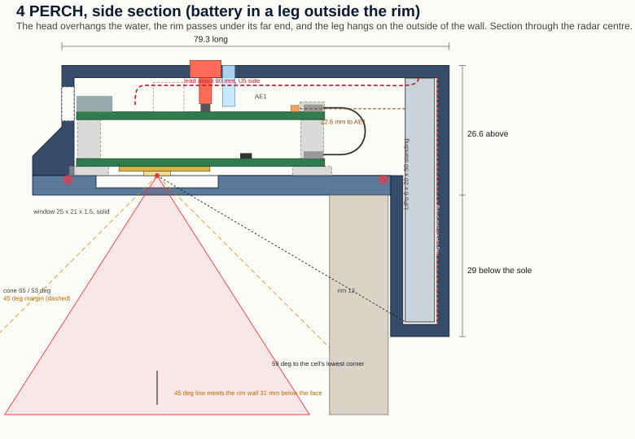
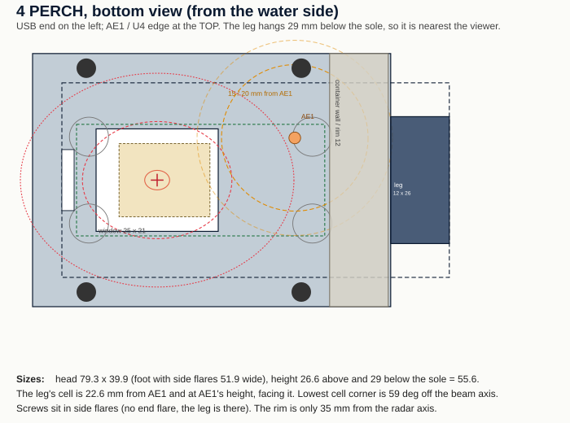

Concepts only, no CAD. Review blocker B3: in the Tidemark stack order the radar would look through the sled into the LiPo. Full text: concepts.md. Working notes: research_notes.md. Sizes in mm. Items marked UNVERIFIED in concepts.md are estimates, not measurements.
| # | Concept | Idea | Outer size | Cell to radar / AE1 | Score /45 |
|---|---|---|---|---|---|
| 1 | Slab | Stack laid flat, cell on the sole beside the boards | 67.3 x 56.9 x 26.6 (foot 79.3 x 68.9) | 14.0 mm sideways / 23.9 mm | 35 |
| 2 | Crown | Cell in a hump on the lid, behind the radar | 67.3 x 39.9 x 26.6, hump 36.6 (foot 79.3 x 51.9) | 19.6 mm behind / 25.4 mm | 36 |
| 3 | Pier | Long head over the water, tail on the rim carries a big cell | 123 x 39.9 x 26.6, tail 13.5 (foot 135 x 51.9) | 50.5 mm / 23.6 mm | 33 |
| 4 | Perch | Head over the water, rim under its end, cell in a leg outside the wall | 79.3 x 39.9, 55.6 tall (26.6 above, 29 below the sole) | 50.8 mm, 59 deg corner / 22.6 mm | 33 |
Window 1.5 mm solid PETG, air gap 2.5 mm, XM125 1.88 mm (modelled, UNVERIFIED), sensor board, 8 mm nylon standoff, feather, headroom, roof: 26.6 mm total. Cone half angles 32.5 and 26.5 degrees; 25 x 21 mm window; PETG permittivity at 60 GHz is UNVERIFIED so the 1.5 mm is a bench decision.

The Tidemark laid on its back. The cell lies on the sole 14.0 mm from the radar axis at the module level, 23.9 mm from AE1. Simplest print (about 5 h, no supports), best for a big cell (width grows 14 mm for a 34 mm cell). Needs a lid cut-out of at least 30 x 26 mm. Score 35.


Cell about 10 x 20 x 20 mm (about 4 cm3) in a hump over the USB half, 19.6 mm behind the module face, 25.4 mm from AE1, lead about 15 mm to U4. The key and LED limit the hump to fx 0 to 20. Print the hump as a separate bonnet (also the battery door) to avoid supports under the stepped roof. Same foot as Perch, smaller than Slab and Pier. Score 36.


The cell sits 50.5 mm from the radar axis in a low tail across the container rim, 23.6 mm from AE1. Biggest battery room (6 x 34 x 50 fits), but 123 mm long, a flat tail roof that needs supports or a split part, and a rim container. Score 33.


The cell stands in a leg outside the container wall: lowest corner 59 degrees off the beam, 22.6 mm from AE1 and facing it. The wall is only 35.3 mm from the axis, so the beam meets it at 31 mm (45 degree margin) to 51 mm (-3 dB) below the face. Needs a rim and room outside. Score 33.


Bench tests before the first full print: PETG coupons (1.2 to 3.0 mm) through the SparkFun XM125 breakout, water film, cell near the radar, wall echo, AE1 range with the cell at each distance, XM125 height, FFC bulge. Details in concepts.md section 9.